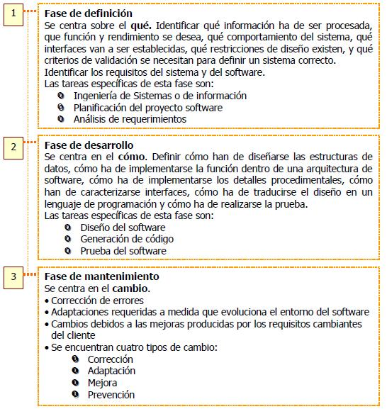

Capítulo 2. El Proceso
Es una serie de pasos a seguir para construir un producto o un sistema. El proceso del software es importante porque proporciona estabilidad, control y organización a una actividad que puede, si no se controla, volverse caótica.
Ingeniería de Software
Zelkovitz. Principles of Software Engineering and Design. Ingeniería del software es el estudio de los principios y metodologías para desarrollo y mantenimiento de sistemas de software.
Boehm. Software Engineering. Ingeniería del software es la aplicación práctica del conocimiento científico en el diseño y construcción de programas de computadora y la documentación asociada requerida para desarrollar, operar y mantenerlos.
Bauer. Software Engineering. Ingeniería del software trata del establecimiento de los principios y métodos de la ingeniería a fin de obtener software de modo rentable que sea fiable y trabaje en máquinas reales.
Pressman. Ingeniería del Software La Ingeniería de/l software es una disciplina o área de la informática o Ciencias de la Computación, que ofrece métodos y técnicas para desarrollar y mantener software de calidad que resuelven problemas de todo tipo.
Braude. Ingeniería de Software La ingeniería de software es el proceso de construir aplicaciones de tamaño o alcance prácticos, en las que predomina el esfuerzo del software y que satisfacen los requerimientos de funcionalidad y desempeño.
IEEE La aplicación de un enfoque sistemático, disciplinado y cuantificable hacia el desarrollo, operación y mantenimiento del software; es decir, la aplicación de ingeniería al software.
Esquema de la Ingeniería de Software
Es muy simple el esquema que consiste en desarrollar un programa sencillo que resuelve una tarea bien determinada. Lo normal es que se evolucione al desarrollo de un
• Sistema software: integra varios programas, o
• Producto software: programa usado en diferentes aplicaciones/entornos
Ambos desarrollos "dan lugar a la Ingeniería del Software": Programas integrados que pueden trabajar en varios entornos.
Esencia de la Ingeniería del Software
Esta figura podría resumir buena parte de la esencia del curso: en el desarrollo de software (una entidad "compleja") se producen problemas de comunicación a varios niveles: entre usuarios y desarrolladores y entre los componentes mismos del equipo de desarrollo.
Estudiaremos las técnicas, métodos y herramientas de ingeniería que puedan hacer que estos problemas se minimicen, e incluso que desaparezcan.
Proceso, Métodos y Herramientas
La ingeniería del software es una tecnología multicapa, y que se apoya sobre un enfoque de calidad.
La ingeniería es el análisis, diseño, construcción, verificación y gestión de entidades técnicas.
El trabajo que se asocia a la ingeniería del software se puede dividir en tres fases, con independencia del área de aplicación, tamaño o complejidad del proyecto.

Un proceso de software se puede caracterizar así: